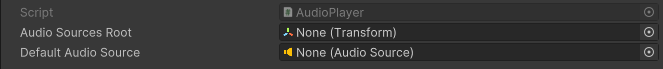
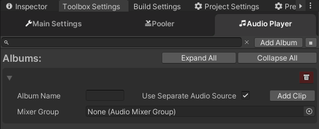
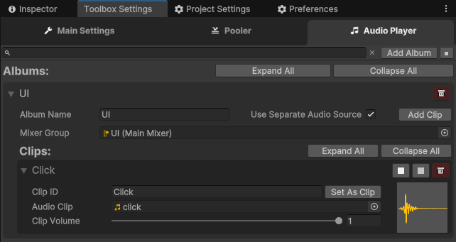
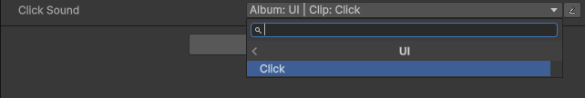

Audio Player
Basics
AudioPlayer allows you to structure sounds used in your project and manipulate them. It uses albums as containers for clips; each album can have its own audio source component bound and can be controlled through a mixer group.
To configure the root for new audio sources and the default audio source, go to the 'MAIN' scene. In the Audio Player component of the 'Toolbox Container' game object, set everything as needed.

Adding Clips
To add an album, go to Toolbox settings and click on the 'Audio Player' tab. Here you can add a new album by clicking the 'Add Album' button. Enter its name and decide if you want to use a separate audio source or use the default. If you are using a separate source, you can define a mixer group for it if you want.

Each album has the following parameters:
Album Name: The name of the album, through which you can access the clips it contains.Use Separate Audio Source: If enabled, Toolbox will create a separate audio source for this album.Mixer Group: The mixer group through which you can control the volume, effects, etc., of the audio source bound to this album.
To delete an album, click the button with the trash icon.
After setting up the album, click on the 'Add Clip' button to add a new audio clip. Enter its name, select the actual audio clip, and adjust the volume you want it to play with. You can also preview it by clicking the 'Play' button or stop playing by clicking the 'Stop' button below the 'Play' button or right after the 'Add Album' button.

Each clip has the following parameters:
Clip ID: The ID of the clip, through which you can retrieve it.Audio Clip: The actual audio clip asset.
To delete a clip, click the button with the trash icon.
Selecting Audio Clips in Inspector
To easily choose which clip you want to play, you can expose a string field by adding the [AudioPlayerClip] tag.

There you can select an album and clip or enter it manually by clicking the button with the pen icon. To end manual editing, click the button again.
Playing Audios
To play audio, you can call one of the following methods:
AudioPlayer.Play(source, id, volume, pitch, loop, playType):source: The album name.id: The clip name.volume: The volume of the AudioSource component (default = 1).pitch: The pitch of the AudioSource component (default = 1).loop: Whether the audio clip will be looped (default = false).playType: The play behavior (default = ONE_SHOT):ONE_SHOT: Plays the clip even if another clip is playing.STOP_THEN_PLAY: Stops the current playing clip if there is one and then plays the provided clip.NO_INTERRUPT: Does nothing if another clip is currently playing; otherwise, plays it normally.
- This method has overloads that allow you to manually provide an AudioSource or AudioClip to play.
AudioPlayer.PlayFormatted(formattedId, volume, pitch, loop, playType):formattedId: A string in the format "[Album_Name]/[Clip_ID]".- Use this method to play clips you selected through the inspector.
By default, in all methods above, the volume parameter is set to -1. By doing this, AudioPlayer will choose the volume you set up in the related clip in the Audio Player tab in Toolbox Settings. Otherwise, it will use the value you provided.